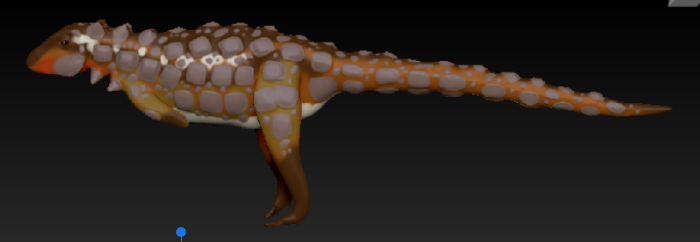
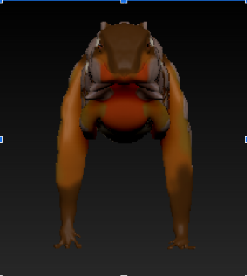
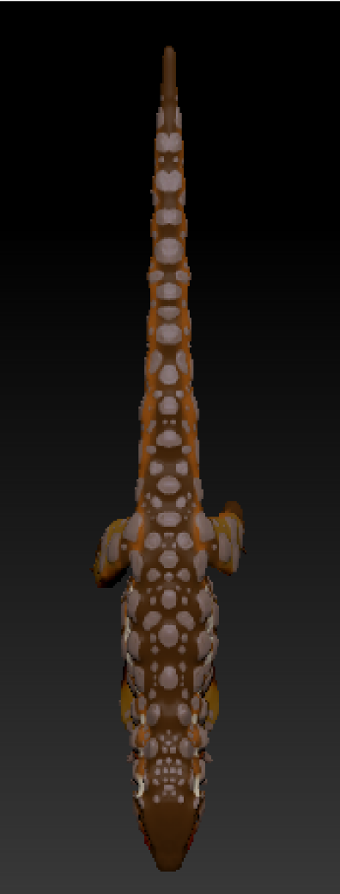
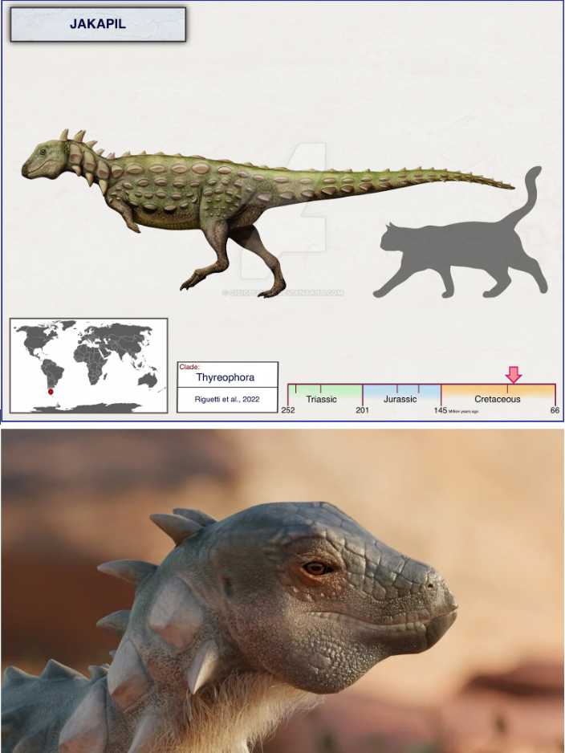

Jakapil
(Add date)
Video
Screenshots



Reference Image

Summary
For this project I had to sculpt a model of an extinct animal. I focused on capturing its unique features and textures to bring it to life.
Tools / Tech Used
- (e.g. Mudbox, Blender)
What I Learned
- How to model with finer details and textures for 3D models really helping me get a better grasp.